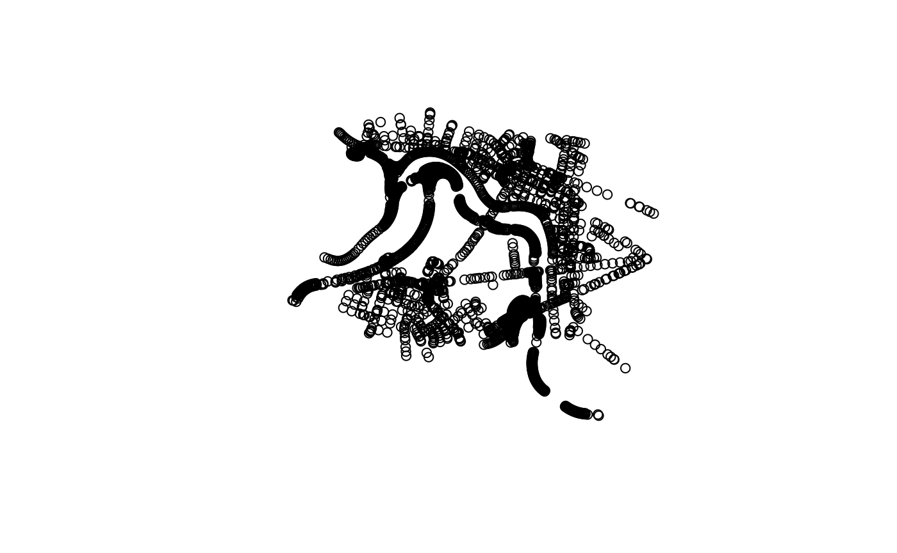
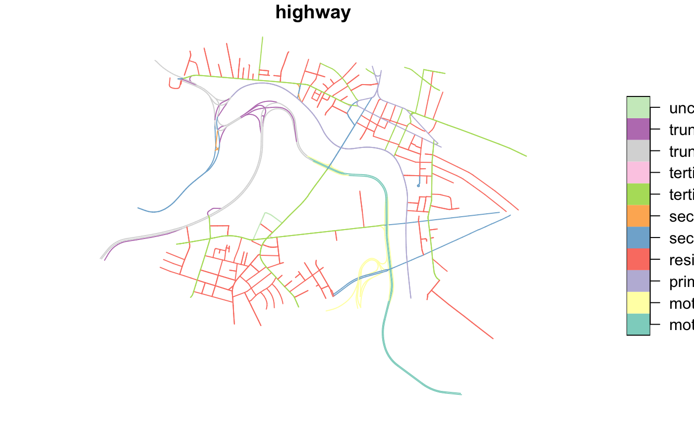
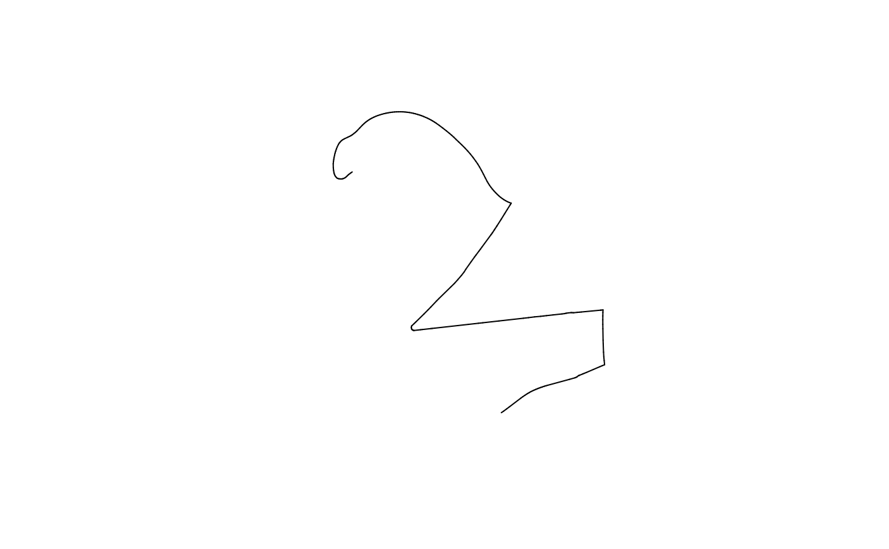
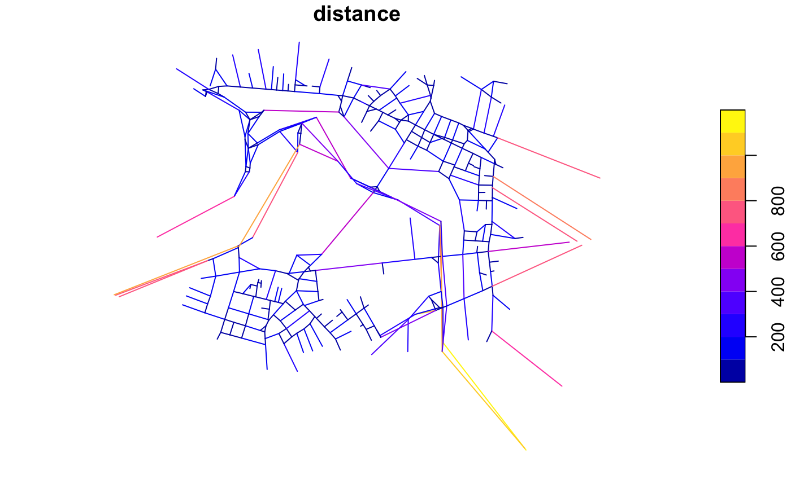

konigsbergr includes a few functions to map its road graphs and analyze the resulting road network.
In the getting-started guide, you used the view_konigsberg_path() function to take a graph and comptued pathway and plot it into an interactive leaflet map. This top-level function wraps a few lower-level functions that you may want to use if you intend to dig into the spatial information in these networks.
I recommend using the sf package for manipulating spatial information in R. sf uses a construct called an sfc object, which is a data frame with a geometry column, in which the spatial description of a given feature (be it a POINT, LINESTRING, POLYGON, MULTIPOLYGON, or what have you) is stored alongside any non-spatial metadata about that feature.
graph_to_sf() takes the graph produced by konigsberg_graph() and uses the latitude and longitude vertex attributes to construct two sfc objects - one for the graph vertices, and one for its edges. You can plot out the points that result from converting the graph vertices, or plot the lines that result from converting the graph edges.
boston_konigsbergr <- konigsberg_graph(boston)
#> Creating base graph...complete!
#> Adding OSM attributes...complete!
#> Filtering graph to desired paths and bridges...complete!
boston_sf <- graph_to_sf(boston_konigsbergr)
plot(boston_sf$vertices["geometry"])
All of the vertex and edge attributes from the graph are included in the sfc table, so you can quickly visualize different road types, etc. For much more in-depth discussion of how to make custom plots of sfc objects, or how to export them into other software like ArcGIS, see the sf plotting documentation.

Computed konigsbergr pathways can similarly be converted into sfc objects using the pathway_to_sf() function.
boston_path <- cross_all_bridges(boston_konigsbergr, starting_node = 2688967592, quiet = TRUE)
path_sf <- pathway_to_sf(boston_konigsbergr, boston_path)
plot(path_sf$pathway["geometry"])
Raw Konigsbergr graphs contain a huge number of vertices in order to accurately describe the geometry of curved roads. For many network analyses, however, road curvature is unimportant compared to the toplogocal layout of intersections. Simplifying OSM-based road graphs like this can reduce the size of a graph by up to 90%. Some measures dependent on numbers of vertices, like closeness, will also benefit from removing topologically-redundant vertices
Beware that this simplifcation also reduces the data to a simple, undirected graph, so the distinction between two-way and one-way roads will be discarded. The sum of the total distances of the removed edges are maintained, however, so the real-world distance in meters of an edge will be saved in the distance edge attribute of the new graph.
vcount(boston_konigsbergr)
#> [1] 2605
ecount(boston_konigsbergr)
#> [1] 3579
simple_boston <- simplify_konigsbergr(boston_konigsbergr)
vcount(simple_boston)
#> [1] 396
ecount(simple_boston)
#> [1] 524
simple_boston_sf <- graph_to_sf(simple_boston)
plot(simple_boston_sf$edges["distance"])